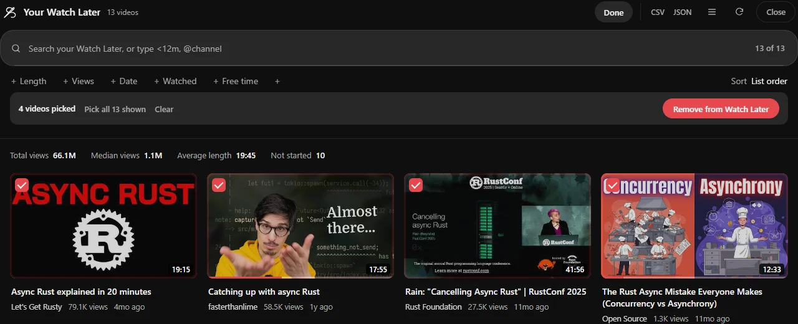

Guide 03·Clean up
How to remove watched videos from Watch Later.
Updated 30 September 2026
Short answer
On your Watch Later page, open the list's menu (the three dots near Play all) and choose Remove watched videos. It removes everything YouTube counts as watched, all at once, with no preview and no undo. To choose what goes, by length, age, channel or how far you got, and undo it afterwards, use Needle's Select on the same page.
01·On YouTube
YouTube's own button
- Open your Watch Later at youtube.com/playlist?list=WL.
- Open the list's menu, the three dots near Play all.
- Choose Remove watched videos and confirm.
It's all or nothing. Everything YouTube counts as watched goes, including the one you meant to watch again, and nothing it counts as unwatched does, however old. There's no preview and no undo.
02·With Needle
Pick exactly what goes, with Needle
- Open your Watch Later and press the needle button in the bottom right corner, or Alt+Y.
- Press Select.
- Click the videos to go, or let a filter choose: Pick the finished ones, or set filters and Pick all shown.
- Press Remove from Watch Later and confirm the number.
- Changed your mind? Undo in the corner puts them all back.

Filters decide, so you don't have to click 300 times
unwatched >1h | Long videos you saved and never started |
before:2023 | Anything uploaded before 2023 |
@name | Everything from one channel |
is:watched | Everything you've finished |
Type a filter in the panel's box, then Pick all shown: exactly those, and nothing else.
Lists longer than 100 videos
Needle reads the first 100 unless Deep reading is on in the popup, the same as when searching. Turn it on to clean up the whole list.
03·Questions
Questions?
Is removing with Needle safe?
It sends YouTube's own remove action, the same one YouTube's menu uses, only after you confirm the number. Undo puts them back with YouTube's own Save to Watch later action.
Can it remove videos from my other playlists?
Not yet. Watch Later only.
Does it need extra permissions?
No. It is off until you turn it on, in the Needle popup or the first time you press Remove, and it only ever touches your Watch Later.
Is it free?
Yes. No account, no trial, no paid tier.